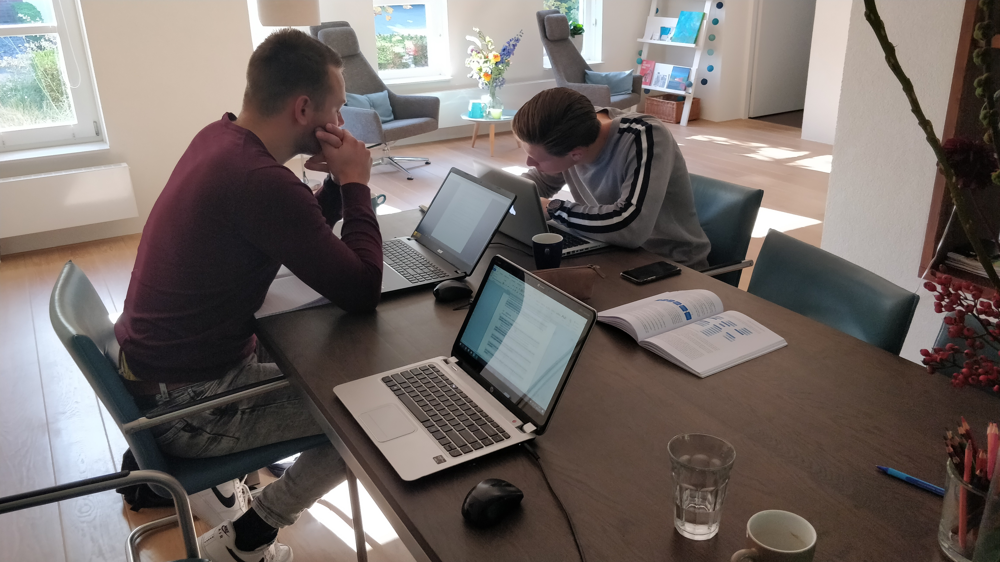

In dit tabblad wordt er ingegaan op de competenties die voldaan dienen te zijn om de Minor Smart Industry te kunnen behalen. De competentielijst is hier te vinden.
De competenties die behaald dienen te worden zijn onderverdeeld in 7 categorieën:
De student is in staat een vraagstuk op het gebied van Smart Industry te signaleren, te beschrijven, te analyseren en te beoordelen op wenselijkheid en haalbaarheid.
Deze competentie kon voornamelijk volbracht worden bij de opdrachten van SMART Start. Bij SMART Start is is er namelijk gewerkt aan verschillende onderwerpen binnen SMART Industry. Zo heb ik gewerkt aan artikelen over een SMART Supply chain, een concept voor ATAG en een SMART Factory van AUDI.
Voor de opdracht van SMART Start week 5 heb ik gewerket aan een businesscase over het Platform Business Model met betrekking tot SMART Industry. Deze is in dit tabblad te lezen.
Naast SMART Start is er ook voornamelijk gewerkt tijdens het project aan deze competentie. Tijdens het project heb ik namelijk een probleem (hoge voorraad) proberen op te lossen met Smart Industry onderwerp (3D-printing). In het project heb ik samen met mijn projectgroep een adviesrapport geschreven naar de eerste stappen richting het integreren van het 3D-printen van servicecomponenten. Voordat deze stappen vastgesteld konden worden, was het eerst de noodzaak om het probleem nader te analyseren en zo goed mogelijk te beschrijven.
Het probleem heb ik vastgesteld door middel vand e 6W-formule. Met deze formule wordt er een zestal vragen gesteld die stapsgewijs het probleem duidelijker in kaart brengt. Met deze vragen kan de probleemstelling worden geschreven en wordt het probleem duidelijk geformuleerd.
Hieronder de 6W-formule zoals uitgewerkt in het hoofdverslag (te vinden in het tabblad; Project)
Wat is het probleem?
Het probleem waar ATAG Benelux tegen aan loopt is de grote voorraad of het niet op voorraad hebben van serviceonderdelen. Veel onderdelen dienen massaal ingekocht te worden ten tijde van de productie om zo ook te voldoen aan de verplichtte tien jaar die ATAG Benelux serviceonderdelen dient te leveren. Hierdoor is er een grote voorraad van serviceonderdelen. Ook kan het voorkomen dat de serviceonderdelen niet meer beschikbaar zijn bij de producent waardoor ATAG Benelux als oplossing een compleet nieuw product dient te leveren.
Wat is de aanleiding?
Het probleem is ontstaan toen de opdracht kwam om de voorraad te halveren. Op dat moment moest er nagedacht worden over een oplossing voor dit probleem. Dit probleem is echter geen nieuw probleem. Zo zijn er al vele onderzoeken gedaan naar mogelijke oplossingen naar het verlagen van de voorraad. In hoofdstuk 2.3 is een samenvatting van een relevant onderzoek naar het 3D-printen van serviceonderdelen te lezen.
Wie heeft het probleem?
ATAG Benelux biedt de consument een aantal merken; ETNA, Pelgrim en ATAG premium. Aan alle consumenten die in bezit zijn van één van deze merken dient ATAG Benelux service te leveren. Binnen ATAG Benelux zijn het de afdelingen service en support die de service verzorgen.
Wanneer is het probleem ontstaan?
ATAG Benelux kampt al ruim 30 jaar met dit probleem. Echter is er sinds de recente overname van het Chinese bedrijf Hisense een eis gesteld om de voorraad te minimaliseren. Vanaf dat moment wordt nagedacht over een oplossing voor dit probleem.
Waarom is het een probleem?
ATAG Benelux is verplicht (Os, 2019) om serviceonderdelen te leveren aan klanten met de producten die onder de vlag van ATAG Benelux vallen. Om te voldoen aan deze eis is ATAG Benelux genoodzaakt om een monteur te sturen met reserveonderdelen of een compleet nieuw product te leveren aan haar klanten. Deze tweede oplossing is erg duur is in vergeleken met alleen het onderdeel vervangen.
Waar doet het probleem zich voor?
Het probleem doet zich met name voor in de afdeling service. Indien de klant een klacht heeft over een product van ATAG Benelux wordt er vanaf hier via de klantenservice gereageerd. De klantenservice beantwoord deze klacht door een klachtenformulier op te stellen en zo het probleem te kunnen identificeren. De werkvoorbereider gaat na in de database of het een bekend probleem is en stelt mogelijke oorzaken op. Op basis van deze informatie worden de mogelijke kapotte componenten bij elkaar gehaald en klaargelegd voor de monteur.
Indien deze componenten niet meer op voorraad zijn en niet verkrijgbaar zijn bij de producent, of niet op tijd geleverd kan worden is ATAG Benelux genoodzaakt om een geheel nieuw product aan te bieden. Deze mogelijke oplossing brengt onnodige kosten met zich mee.
De student is in staat vernieuwende ideeen te ontwikkelen en deze te vertalen naar concepten voor processen, producten of diensten.
Deze competentie spreid zich eigenlijk over meerdere vakken, namelijk SMART Technology, Connection, Business en het Project bij ATAG
Zo heb ik voor SMART Technology gewerkt aan een IOT aansluiting die een plant automatisch water geeft. Verdere uitleg over hoe ik dit heb aangepakt is te vinden in dit tabblad.
Helaas Is het mij niet gelukt om de OIT-schakeling volledig automatisch te laten werken. Alles is wel correct gesoldeerd en aangesloten. Waarschijnlijk heb ik een fout gemaakt in het ontwerpen van het PCB voordat deze naar China is gestuurd. Hierdoor is het PCB niet geprogrammeerd en werkt de schakeling niet naar toebehoren.
Met SMART Connection heb ik ook gewerkt aan deze competentie. Voordat ik aan de Minor begon had ik totaal geen kennis over html, css en javascript (of ook maar een enkele vorm van programmeren). Tijdens de workshops heb ik steeds meer geleerd over deze onderwerpen, met als resultaat dit prachtige portfolio. Ik heb hiervan veel van mijn klasgenoten geleerd die weer met handige tips kwamen. Daarnaast heb ik veel gebruik gemaakt van w3schools om zo de nodige dingen met HTML en CSS te programmeren voor mijn portfolio. Ik ben tevreden met het resultaat en ik wist niet dat dit zo handig kon zijn om op een interactieve manier mijn resultaten te laten zien. Direct filmpjes en foto's laten zien en linken naar websites zorgen er voor dat deze opdracht zo interactief mogelijk voldaan is.
Ook heb ik bij SMART Business gewerkt aan deze competentie. Zo heb ik mede door Deze Businesscase er aan gewerkt. Meer over de opdracht, resultaten en de case in dit tabblad.
Tot slot heb ik met het project bij ATAG Benelux ook gewerkt aan deze competentie. Om toch iets tastbaars te hebben voor het seminar hebben wij in samenwerking met verschillende partners er voor gezorgd dat een bestaand servicecomponent, in dit geval het filter van een vaatwasser, gescand en geprint kon worden. Hiervoor is het filter eerst bij GeoPoints geweest die er een scan van heeft gemaakt. Vervolgens is het STL-file naar Oceanz gestuurd die er een proffessionele print van hebben gemaakt. Hiernaast hebben wij het filter ook laten printen in de modelshop van ATAG zelf. Deze is geprint met een ultimaker en voor veel mensen herkenbaar. Om deze herkenbaarheid hebben wij het filter ook geprint, zodat mensen die nog niet zo bekend zijn met de mogelijkheden van 3D-printen, ook kunnen zien wat de verschillen zijn.
Hieronder het origineel (links), het geprinte filter uit de modelshop (rechts) en van Oceanz (onder).


De student is in staat in een multidisciplinaire omgeving methoden en technieken op het gebied van projectmanagement te selecteren en toe te passen op een Smart Industry vraagstuk.
Deze competentie heb ik met name kunnen voldoen bij het project met ATAG en tijdens de Kookworkshop.
Binnen het project dienden wij natuurlijk aan een planning te houden. Deze hebben wij aan het begin van het project gemaakt en hier aan gehouden. In dit tabblad vertel ik bij het kopje 'Reflectie' meer over de samenwerking binnen de projectgroep.
Op 24 oktober 2019 hebben we met de hele klas een kookworkshop, onder leiding van Marcel Weber bij Het Kook College in Wijchen.
Tijdens deze kookworkshop was het de opdracht om met de gehele klas, vijf gangen te bereiden om uiteindelijk te gaan eten. De klas werd onderverdeeld in vijf groepen die ieder een 'box' met ingrediënten kreeg. Iedere groep had een verschillende gang, zo had de één voorgerecht, een ander hoofd en weer een ander na. Hierin zijn wij volledig vrij geweest in de keuze qua ingrediënten, gerechten en samenwerking.
Natuurlijk moesten wij ook onderling afstemmen wanneer welk gerecht klaar moest zijn en wie wanneer wat ging opdienen. Ik heb mijzelf opgegeven om dit te verzorgen. Mijn taak was dus om eerst te inventariseren; Wat iedereen ging maken, in welke volgorde het opgediend ging worden en wanneer alles klaar diende te zijn. Hiervoor heb ik ten eerste een inventarisatie gemaakt van welke groep wat ging maken. Vervolgens heb ik de volgorde van de gerechten bedacht en een planning gemaakt. (zie foto's)
Vervolgens ben ik continue langs de groepen gegaan om de voortgang te peilen en geholpen waar nodig. Over het algemeen redde iedereen zich prima in de gerechten en werkte iedereen mee om er een mooi resultaat van te maken.


De student is in staat in een multidisciplinaire omgeving methoden en technieken op het gebied van onderzoek te selecteren en toe te passen op een Smart Industry vraagstuk.
Deze competentie is met name behaald tijdens het project bij ATAG. Voor dit project hebben wij namelijk afgesproken om een onderzoeksrapport te schrijven. Voordat het onderzoek gedaan kan worden, moet er natuurlijk een plan van aanpak geschreven worden met een onderzoeksopzet, onderzoeksplan en een planning. Via deze link is het plan van aanpak voor ATAG te zien.
In de realiteit zijn we afgeweken van het plan van aanpak. Zo hebben we gaanderweg nog eens goed nagedacht over de deelvragen en deze uiteindelijk ook aangepast. In het plan van aanpak gaat deelvraag 4 over hoe bestaande tekeningen gebruikt kunnen worden voor het 3D-printen van servicecomponenten. Echter kwamen wij enekele weken in het project er achter dat ATAG vrijwel geen tekeningen heeft van de componenten, waardoor deze deelvraag totaal niet relevant is. Deze hebben we veranderd en een stuk economische aspecten er bij gepakt.
Naast deelvraag 4 hebben we ook deelvraag 3 veranderd. Al gauw bleek namelijk dat met de huidige stand der techniek er technisch heel veel mogelijk is op het gebied van 3D-printing. Wij hebben de deelvraag samen met deelvraag 4 veranderd naar wat de investeringsmogelijkheden voor ATAG Benelux zijn en welke producten economisch aantrekkelijk zijn om te gaan printen.
Omdat de deelvragen veranderd zijn, zijn de dataverzamelingsmethodes en onderzoeksmethodes ook aangepast. Het resultaat is te vinden in het definitieve onderzoeksrapport. Project
De student kan, zowel in het Nederlands als het Engels, ideeen, meningen, standpunten en besluiten correct, begrijpelijk en overtuigend overbrengen met behulp van verschillende communicatiekanalen.
Deze competentie is met name voldaan tijdens SMART Start en het Project.
Bij SMART Start was het de zaak om verschillende thema's van SMART Industry te analyseren en te bestuderen. Om de artikelen te schrijven en meer informatie te verkrijgen over de verschillende onderwerpen, bijvoorbeeld de SMART Factory van AUDI, is er gebruik gemaakt van engelstalige bronnen omdat deze bronnen meer informatie geven dan nederlandse bronnen.
Ook tijdens het project is er gebruik gemaakt van engelstalige bronnen, onder andere voor de 3D-printtechnieken en de verschillende testmethodes die gebruikt kunnen worden om materialen te testen. Uiteindelijk zijn deze teksten van het Engels gebruikt om in het Nederlands het rapport te vormen.
Binnen het project hebben wij als projectgroep op verschillende manieren gebruik gemaakt om te communiceren met elkaar. Meer hierover in het stukje 'Reflectie samenwerking projectgroep' in dit tabblad.
De student kan relaties en allianties binnen en buiten de eigen organisatie ontwikkelen en bestendigen en deze benutten voor het verkrijgen van informatie, steun en medewerking.
Deze competentie is voldaan tijdens het project bij ATAG. Meer over de samenwerking en de werksfeer in dit tabblad.
Ook heb ik door dit project (en de minor) mijn proffessioneel netwerk een stuk weten uit te breiden. Dit proffessionele netwerk is met name te meten op mijn LinkedIn pagina.Linkedin . Ik heb dit platform namelijk gebruikt om nieuwe connecties te maken die ik tijdens de Minor en het project heb leren kennen. Op deze manier worden er interessante artikelen gedeeld die ik weer kan lezen en hou ik de contacten op de hoogte van het project. Voorgaand aan de minor maakte ik nog niet erg veel gebruik van LinkedIn, maar mede dankzij mijn projectgenoten ben ik het steeds meer gaan gebruiken. Linked in is namelijk een mooi platform om je netwerk bij te houden en bij te houden waar je contacten mee bezig zijn (en ze op de hoogte stellen natuurlijk).
De startende professional is in staat via de weg van reflectie zich professioneel te blijven ontwikkelen en een bijdrage te leveren aan de ontwikkeling van de organisatie en de beroepspraktijk door opgedane kennis te borgen, over te dragen en te verspreiden. Hierbij is de professional zich bewust van Smart Industry context waarin hij opereert en past zijn gedrag en/of zijn adviezen hierop aan.
Tot slot slaat deze laatste competentie terug op de gehele minor. De reflectie over het project is in dit tabblad te vinden.
Voor mij was de minor SMART Industry een mooie toevoeging op mijn kennis op het gebied van Technische bedrijfskunde. Ik wilde namelijk graag mijn kennis vergroten door technieken en innovaties te bestuderen die in de toekomst meer gebruikt gaan worden. Om deze reden leek SMART Industry mij daarom een geschikte Minor om dit afgelopen half jaar te volgen.
Op het begin was het wel erg wennen voor mij. Een nieuwe school, andere opzet van opleiding, andere platformen waarop gewerkt moest worden. In de eerste weken was ik een beetje sceptisch over de minor en wist ik niet zeker of ik het niet leuk vond, of dat het simpelweg gewoon wennen was. Een aantal medestudenten zijn ook om diezelfde reden vroegtijdig al gestopt met de minor en dat heeft mij wel aan het denken gezet. Ik heb er uiteindelijk voor gekozen om wel de minor te blijven volgen om mijzelf uit te dagen en ik toch wel erg nieuwschierig was naar de verschillende onderwerpen die behandeld zouden gaan worden.
Over het algemeen heb ik een goed gevoel over de minor gehad. Met name de laatste weken waar we met het project bij ATAG aan de slag konden gaan ben ik echt blij dat ik deze minor heb gedaan. De kennis die ik heb opgedaan op het gebied van SMART Industry en 3D-printing zijn naar mijn mening onderwerpen die ik mijn hele carrière nog ga benutten. Ook omdat mijn oorspronkelijke opleiding continue bezig is met vernieuwing en het verbeteren van processen, is SMART Industry een mooie toevoeging op mijn kennis.
Daarnaast vond ik de verschillende activiteiten die zijn gegeven (Kookworkshops, Gastsprekers en bedrijfsbezoeken) erg nuttig om mijzelf voor te bereiden op het leven na mijn afstuderen.
Ik heb het afgelopen half jaar mijn kennis, ervaring en denkwijze aanzienlijk vergroot. Al deze ervaringen zullen mij later helpen in het proffessioneel werkgebied.
Tijdens het schrijven van deze reflectie is het eindseminar nog niet geweest. Ik kijk daar erg naar uit om de resultaten van andere klasgenoten te zien. Ook hoop ik dat verschillende mensen geïnteresseerd zijn in ons onderzoek en hoop dat ik, samen met mijn projectgroep, de mensen op andere inzichten kan brengen op het gebied van 3D-printing.